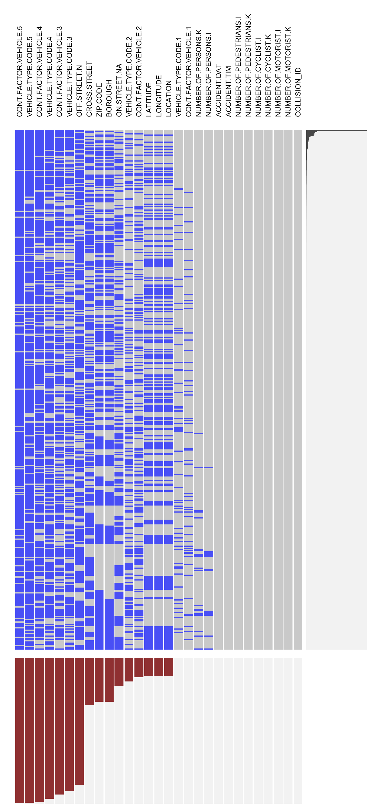

Chapter 4 Missing values
4.1 Motor_Vehicle_Collisions - Crashes

4.1.1 Column pattern
Two types of variables have a noticeably large number of missing values:
4.1.1.1 Location-based variables
Within all the location-based variables, they can be classified into three groups according to their missing values. Off-street and cross-street are the group that have the highest number of missing values. Since there are too many missing values for these two variables, we will not consider using them in our analysis. Then it follows that zip code and borough are the group that has second highest missing values. The latitude, longitude, and location are the group that has third highest number of missing values. Since location is essential to analyze the collisions, and the latitude, longitude, and location have the fewest missing values, we will use them as our location indicator.
Although, comparing to latitude and longitude, zip code and borough are usually easier to access, these two variables have a noticeably higher number of missing values than latitude and longitude. One possible explanation of this pattern is that longitude and latitude information is usually automatically tracked by machines while zip code and borough require manual key-in.
To tackle this issue and to make our results carry more value, we decide to plot map plots using longitude and latitude, instead of using borough and zip code. A further impact of our analysis will be discussed later.
4.1.1.2 Event-recording variables
It is interesting to see all event-recording variables share the same level of missing variables. Especially for contributing factor vehicles, the number of missing values increases as the # of contributing factor vehicles increases.
This pattern makes sense because it becomes rarer and rarer as the number of vehicles involved in a single collision incident increases.
4.1.2 Row pattern
Among those two types of variables that contain a high volume of missing values, there is a uniform row pattern that, if one of the variables under a specific type ever goes missing, the rest of the variables under the same type usually miss together:
4.1.2.1 Location-based variables
According to the missing value pattern plot, zip code, borough, longitude, and latitude, if ever go missing, usually miss together. Furthermore, variables such as latitude, longitude, and location are obvious triplets, meaning that, if one of them is missing, the other two are almost 100% missing. Patterns like that also reflect on the relationship between variables such as borough and zip code.
The first pattern makes sense because these variables are representations of one single item from various aspects. Therefore, when one of those variables goes missing, it is almost 100% predictable that the other goes missing, for possibly the same reasons.
The second pattern makes sense as well because variables belonging to the “twins” and “triplets” usually share the same geographical granularity. For example, the geographical granularity level shared by latitude and longitude is different from the geographical granularity level shared by zip code, borough and street name.
4.1.2.2 Event-recording variables
According to the missing value pattern plot, contributing factor vehicle and vehicle type code, if ever goes missing, usually miss together. Also, starting from contributing factor vehicle 2 and vehicle type code 2, the number of rows that misses contributing factor vehicles and vehicle type codes increases dramatically.
The first pattern makes sense because these two variables are just representations of one single item in two different aspects. Therefore, when one of those two variables goes missing, it is almost 100% predictable that the other goes missing, for possibly the same reasons.
The second pattern makes sense as well because it is very rare for a single collision incident to have numerous contributing factors.
To tackle these missing value patterns as well as to make our analysis less distracted, we mainly focus on the contributing factor vehicle 1 and vehicle type code 1 in our analysis as the “main” contributing factors.
```